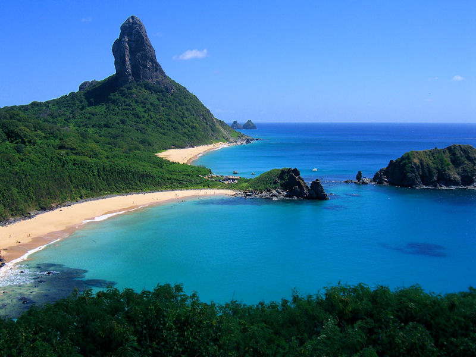

Recife: A capital do estado é conhecida por suas belas praias, como Boa Viagem e Porto de Galinhas, esta última famosa por suas piscinas naturais de águas claras e mornas. Recife também possui um centro histórico encantador, com destaque para o Bairro do Recife Antigo, onde você pode visitar o Marco Zero, o Paço do Frevo e o famoso Mercado de São José.
Bem-vindo à Pernanbuco

Olinda: Localizada a poucos quilômetros de Recife, Olinda é uma cidade histórica declarada Patrimônio Mundial pela UNESCO. Suas ruas de paralelepípedos, casas coloridas e igrejas barrocas encantam os visitantes. Durante o Carnaval, Olinda ganha vida com seus blocos de rua e festas animadas.

Fernando de Noronha: Um verdadeiro paraíso tropical, o arquipélago de Fernando de Noronha é conhecido por suas praias de areias brancas e águas cristalinas. As atividades populares incluem mergulho, snorkeling, observação de golfinhos e trilhas pela natureza exuberante da ilha.
Caruaru: Considerada a capital do forró, Caruaru é famosa por suas festas juninas, que atraem visitantes de todo o país. A cidade também é conhecida por seu artesanato, especialmente o trabalho em barro, que pode ser apreciado na Feira de Caruaru, uma das maiores feiras de artesanato da América Latina.

Praia dos Carneiros: Localizada no município de Tamandaré, a Praia dos Carneiros é uma praia paradisíaca com águas tranquilas e areia clara. Ela é conhecida por sua beleza natural intocada e pela Capela de São Benedito, construída no século XVIII, que se tornou um ícone da região.